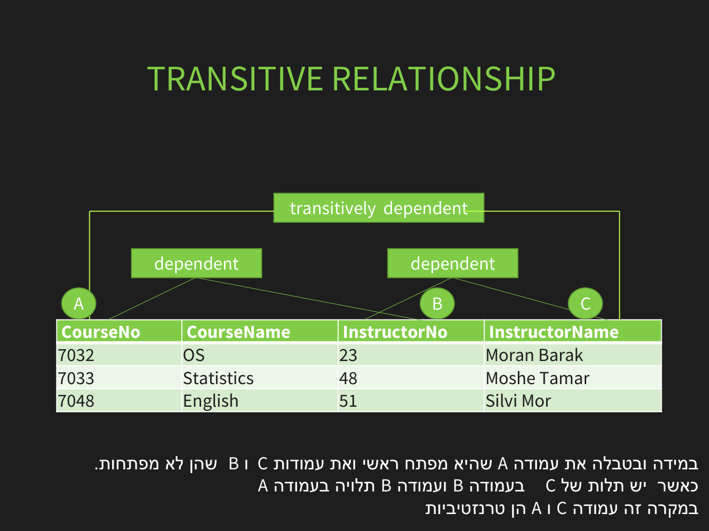

נירמול ותלויות פונקציונליות
⏱ זמן משוער: 45 דק'
למה לנרמל? אנומליות
נירמול הוא תהליך פירוק טבלאות כדי להסיר כפילות ולמנוע אנומליות:
- עדכון (update): אותה עובדה בכמה שורות — שינוי חלקי יוצר חוסר-עקביות.
- הוספה (insert): אי אפשר להוסיף עובדה בלי עובדה אחרת (למשל מוצר בלי הזמנה).
- מחיקה (delete): מחיקת שורה מוחקת בטעות מידע נוסף שנשמר רק בה.
על הטבלה הלא-מנורמלת מהשיעור (ראו את הדוגמה המלאה בהמשך) שלוש האנומליות נראות כך:
Student_Report(StudentNo, StudentName, Major, CourseNo, CourseName, ...)
-- אנומליית הוספה: אי אפשר להוסיף קורס חדש שעדיין אין בו סטודנטים
-- (אין StudentNo → אין שורה)
-- אנומליית עדכון: שינוי שם הקורס OS דורש עדכון בכל שורה שבה הוא מופיע —
-- פספסתם שורה אחת? הנתונים כבר לא עקביים
-- אנומליית מחיקה: מחיקת הסטודנט האחרון בקורס מוחקת בטעות
-- גם את פרטי הקורס והמרצהמקור: NormalForms.pdf
תלות פונקציונלית
תלות פונקציונלית X → Y אומרת: ערך של X קובע חד-משמעית את Y. למשל emp_id → salary (לכל עובד שכר אחד). הנירמול מבוסס על ניתוח התלויות מול המפתח.

מקור: NormalForms.pdf
הצורות הנורמליות
- 1NF: כל הערכים אטומיים (אין רשימות/חזרות בעמודה), יש מפתח ראשי.
- 2NF: 1NF + אין תלות חלקית — עמודה שאינה מפתח תלויה בכל המפתח, לא רק בחלק ממנו (רלוונטי רק למפתח מורכב).
- 3NF: 2NF + אין תלות מעבר — עמודה שאינה מפתח תלויה במפתח בלבד, לא בעמודה לא-מפתח אחרת.
- BCNF: חיזוק של 3NF — לכל תלות X→Y, ה-X חייב להיות מפתח-על (super key — קבוצת עמודות שמזהה שורה ייחודית; הוגדר בפרק המודל הרלציוני).
מקור: NormalForms.pdf
הדוגמה המלאה מהשיעור: Student_Report מ-1NF עד 3NF
זה בדיוק פורמט שאלת הנירמול במבחן — טבלה אחת גדולה שמפרקים שלב-שלב. נתחיל בטבלה הלא-מנורמלת של דוח הציונים:
Student_Report(StudentNo, StudentName, Major, CourseNo, CourseName,
InstructorNo, InstructorName, Grade)
-- StudentNo | StudentName | Major | CourseNo | CourseName | InstructorNo | InstructorName | Grade
-- 32170066 | Roni Gil | Computers | 7032 | OS | 23 | Moran Barak | 80
-- 32170066 | Roni Gil | Computers | 7033 | Statistics | 48 | Moshe Tamar | 76
-- 35170063 | Shai Gover | Business | 7033 | Statistics | 48 | Moshe Tamar | 76
-- 35170063 | Shai Gover | Business | 7048 | English | 51 | Silvi Mor | 94שלב 1 — 1NF: מסירים את הקבוצה החוזרת (פרטי הקורסים של כל סטודנט) לטבלה נפרדת, ומזהים מפתח לכל טבלה:
Student(StudentNo, StudentName, Major)
StudentCourse(StudentNo, CourseNo, CourseName,
InstructorNo, InstructorName, Grade)
-- PK של StudentCourse: (StudentNo, CourseNo) — מפתח מורכבשלב 2 — 2NF: מסירים תלות חלקית: CourseName וה-Instructor תלויים רק ב-CourseNo (חלק מהמפתח המורכב), בעוד Grade תלוי בשני חלקי המפתח. מפרידים:
Student(StudentNo, StudentName, Major)
CourseGrade(StudentNo, CourseNo, Grade) -- רק מה שתלוי בכל המפתח
CourseInstructor(CourseNo, CourseName, InstructorNo, InstructorName)שלב 3 — 3NF: מסירים תלות מעבר: InstructorName תלוי ב-InstructorNo — שהוא בעצמו לא מפתח (ראו את התרשים למעלה). מפרידים את המרצים לטבלה משלהם:
Student(StudentNo, StudentName, Major)
CourseGrade(StudentNo, CourseNo, Grade)
Course(CourseNo, CourseName, InstructorNo) -- InstructorNo נשאר כמפתח זר
Instructor(InstructorNo, InstructorName)ו-BCNF? הדוגמה מהמצגת: Bor_Loan(CustomerID, LoanID, Amount) עם התלות LoanID → Amount — ה-LoanID אינו מפתח-על, ולכן מפרקים: Loan(LoanID, Amount) ו-Bor_Loan(CustomerID, LoanID).
מקור: NormalForms.pdf
דוגמה קצרה נוספת: פירוק ל-3NF
טבלה emp(emp_id, name, dept_id, dept_name) עם dept_id → dept_name מפרה 3NF (תלות מעבר: dept_name תלוי ב-emp_id דרך dept_id). הפירוק:
employee(emp_id, name, dept_id)
department(dept_id, dept_name)מקור: NormalForms.pdf
בדיקה עצמית
טבלה עם מפתח מורכב שבה עמודה תלויה רק בחלק מהמפתח מפרה:
תלות מעבר (dept_id → dept_name בתוך טבלת עובדים) מפרה:
מהי הדרישה של 1NF?
איזו אנומליה מונע נירמול כאשר מחיקת השורה האחרונה של מוצר לא אמורה למחוק את פרטי המוצר?
מה מבטיח BCNF שמעבר ל-3NF?
סיימתם את הפרק? סמנו אותו כהושלם: